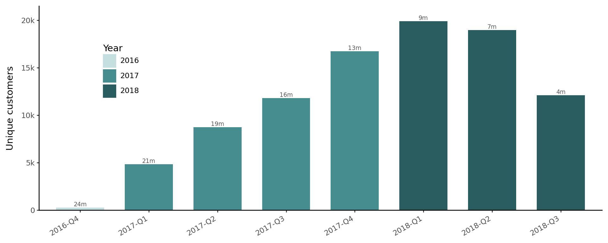
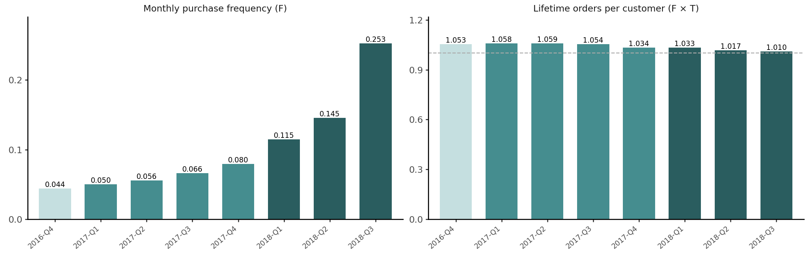
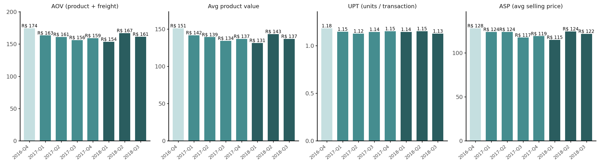
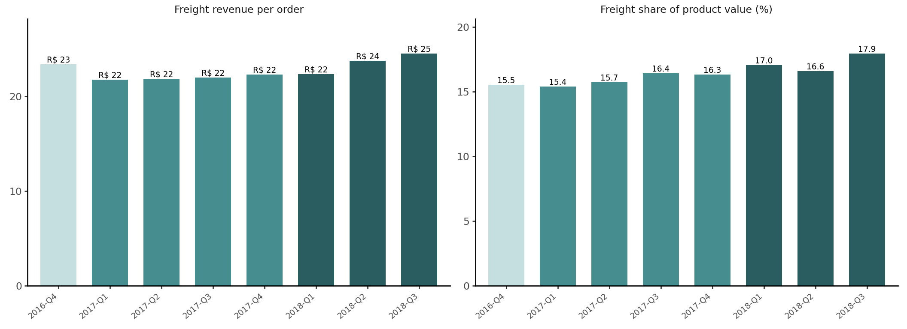
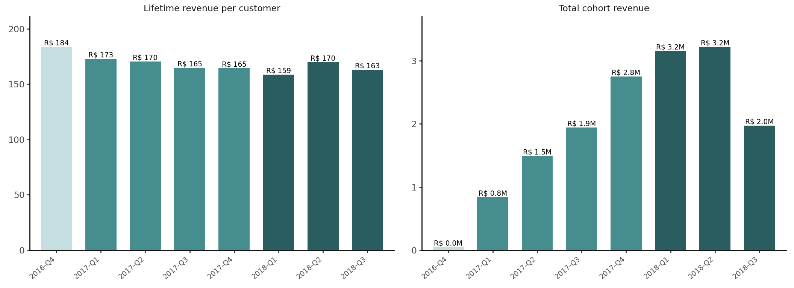

%%{init: {"theme": "base", "themeVariables": {"primaryColor": "#e8f5f5", "primaryBorderColor": "#458d8f", "primaryTextColor": "#212529", "lineColor": "#888888", "fontSize": "14px"}}}%%
flowchart TD
classDef ok fill:#e8f5f5,stroke:#458d8f,color:#212529
classDef partial fill:#fff8e1,stroke:#c9a227,color:#212529
classDef na fill:#f0f0f0,stroke:#bbb,color:#999,stroke-dasharray:4 2
NCM["Lifetime Net Contribution Margin"]:::partial
LTV["Total Cohort LTV"]:::partial
CAC["Total Cohort CAC"]:::na
NCM -->|\+| LTV
NCM -->|−| CAC
SIZE["Cohort Size"]:::ok
LTVPC["LTV per Customer"]:::partial
LTV -->|×| SIZE
LTV -->|×| LTVPC
ADSP["Ad Spend"]:::na
CAC --> ADSP
AGPPC["Gross Profit per Customer"]:::partial
T["T (Avg Customer Lifespan)"]:::partial
LTVPC -->|×| AGPPC
LTVPC -->|×| T
GPO["Gross Profit / Order"]:::na
F["F (Purchase Frequency)"]:::ok
AGPPC -->|×| GPO
AGPPC -->|×| F
AOV["AOV (Avg Order Value)"]:::ok
COGS["COGS / Order"]:::na
FCOST["Freight Cost / Order"]:::na
VAR["Other Variable Costs / Order"]:::na
GPO -->|\+| AOV
GPO -->|−| COGS
GPO -->|−| FCOST
GPO -->|−| VAR
APV["Avg Product Value"]:::ok
FR["Avg Freight Revenue"]:::ok
AOV -->|\+| APV
AOV -->|\+| FR
ASP["ASP (Avg Selling Price)"]:::ok
UPT["UPT (Units per transaction)"]:::ok
APV -->|×| ASP
APV -->|×| UPT
Building a Metric Tree for E-commerce: Analyzing LTV and AOV in the Olist Dataset
Unit Economics
Cohort Analysis
Olist
Deconstructing marketplace unit economics, average order value, and lifetime value using the public Olist dataset.
A metric tree is a mathematical model of a business. It decomposes the primary business metric into the drivers and inputs that move it. The tree forces you to define the metrics you care about and understand their relationships. Once drawn, it reveals which lever to pull to achieve a specific effect. However, applying a metric tree to aggregate data can be misleading.
A single-year snapshot would compress customers with very different histories into one average. A customer acquired in January has eleven months to place a second order before the year ends; one acquired in December has one. Averaging them together produces a number that describes neither group well.
A cohort-based view fixes this by grouping customers by the time of their first purchase (or registration - depending on your definition) and tracking their lifetime behaviour together. Instead of asking, “What was total revenue in 2017?”, we can ask, “What has each acquisition cohort generated over its observed lifetime?” Cohort differences can also surface patterns masked by aggregate views, e.g., does a holiday-season cohort spend more per order? Do different quarters produce meaningfully different repeat rates?
Let’s build up a metric tree for quarter-level cohorts using Olist dataset. For dataset setup and schema overview, see Customer Analytics with Olist, Part 1: Data Setup.
The metric tree
We will decompose lifetime net contribution margin per cohort which is revenue after variable costs. The “lifetime” qualifier means we sum it across every order a customer places, not just their first. It can be decomposed into two branches: what a cohort generates over its lifetime (the LTV branch), and what it costs to acquire (the CAC branch).
Lifetime Net Contribution Margin per Cohort is the difference between the total Total Cohort Lifetime Value (LTV) (\(\text{LTV per customer} \times \text{Cohort Size}\)) and the total cohort Customer Acquisition Cost (CAC):
\[\text{Lifetime Net Contribution Margin per Cohort} = \text{LTV per customer} \times \text{Cohort Size} - \text{total cohort CAC}\]
In the Olist dataset, the CAC branch cannot be calculated because there’s no information on advertising costs. The LTV branch can be partially calculated.
Decomposing E-Commerce LTV
The traditional way to calculate LTV relies on Customer Value (CV) and Gross Margin (GM) percentages \[ \text{LTV per customer} = \underbrace{\text{AOV} \times \text{F}}_{\text{Customer Value (CV)}} \times \text{GM} \times \text{T} \]
Although this approach is common, applying a flat gross margin percentage may be misleading.
Instead, we will build the tree using absolute unit economics. We start by looking at the Gross Profit (GP) of a single order, multiplied by how often the customers buy, and how long they stick around:
\[\text{LTV per customer} = \underbrace{\underbrace{\text{AOV} \times \text{GM}}_{\text{GP per Order}} \times \text{F}}_{\text{GP per customer}} \times \text{T}\]
- GP (Gross Profit per Order) is what remains from a single order after the variable costs of fulfilling it:
\[\text{GP per order} = \text{AOV} - \text{COGS} - \text{Freight Cost} - \text{Other Variable Costs}\]
We cannot compute GP for Olist — AOV is observable, but the cost lines are not.
F (Purchase Frequency) is the number of orders an average customer places in a unit of time.
T (Average Customer Lifespan) is the average duration a customer continues to buy from you. It is typically calculated as \(1/C\), where \(C\) is churn rate.
AOV (Avg Order Value) measures the average total amount of money spent every time a customer completes a transaction.
Average Order Value
Finally, we can break down the revenue side of that GP equation.
The AOV (Avg Order Value) is the average amount the customer pays at checkout. It is the sum of two revenue streams: \[\underset{\text{At the checkout level}}{\text{AOV}} = \underbrace{\text{ASP} \times \text{UPT}}_{\text{Avg Product Value at the cart level}} + \underbrace{\text{FR}}_{\text{Freight Revenue}}\]
ASP (Avg Selling Price) is the realized price of the items.
UPT (Units per Transaction) is the number of items in the cart.
FR (Avg Freight Revenue) is the delivery charge paid by the customer.
\(T\) (Avg Customer Lifespan) here is measured in months to match \(F\), so that \(F \times T\) cancels to a pure lifetime order count. In this specific dataset, roughly 96% of Olist customers made only one purchase. As a result, calculating a standard monthly churn rate (\(C\)) yields 100% making \(1/C\) misleading without predictive models. We will return to \(T\) with predictive models in a separate post. For now we will calculate the metrics the data supports.
Node colours: teal = computable from Olist; yellow = some inputs missing; grey dashed = not in the dataset.
Setup
Let’s load four tables and work with delivered orders aacross the full dataset with no year filters. We’ll restrict to delivered status: cancelled, in-transit, and pending orders carry incomplete or zero revenue.
Show the code
import os
from pathlib import Path
import pandas as pd
from dotenv import load_dotenv
from plotnine import (
ggplot, aes, geom_col, geom_text, geom_hline, facet_wrap,
scale_fill_manual, scale_y_continuous, labs,
theme, theme_classic, element_text, element_blank,
)
load_dotenv()
OLIST_DIR = Path(os.environ["DATA_DIR"]) / "olist"
orders = pd.read_csv(
OLIST_DIR / "olist_orders_dataset.csv",
parse_dates=["order_purchase_timestamp"],
)
order_payments = pd.read_csv(OLIST_DIR / "olist_order_payments_dataset.csv")
order_items = pd.read_csv(OLIST_DIR / "olist_order_items_dataset.csv")
customers = pd.read_csv(OLIST_DIR / "olist_customers_dataset.csv")Cohort definitions
A quarterly cohort groups all customers whose first delivered order falls in the same calendar quarter (Q1 = Jan–Mar, Q2 = Apr–Jun, Q3 = Jul–Sep, Q4 = Oct–Dec). We will assign cohort from customer_unique_id, not customer_id (a person can appear under multiple customer_id values across different orders).
The dataset covers September 2016 through October 2018. The very first quarter, 2016-Q3, contains a single customer with a single delivered order, so we drop it. A cohort of one is an anecdote, not a statistic.
That leaves eight quarterly cohorts. Each is observed for a different stretch of time before the dataset ends: the oldest 2016-Q4 cohort has roughly 24 months of follow-up; the 2018-Q3 cohort has about four. With the near-zero repeat rates at Olist, this difference in observation window has little practical effect on purchase frequency estimates.
Show the code
DATASET_END = orders["order_purchase_timestamp"].max()
first_ts = (
delivered.groupby("customer_unique_id")["order_purchase_timestamp"]
.min()
.rename("first_ts")
.reset_index()
)
first_ts["cohort"] = first_ts["first_ts"].dt.to_period("Q").astype(str).str.replace('Q', '-Q')
# 2016-Q3 contains a single customer; a cohort of one is dropped
first_ts = first_ts[first_ts["cohort"] != "2016-Q3"]
cohort_start = (
first_ts.groupby("cohort")["first_ts"]
.min()
.rename("cohort_first_order")
.reset_index()
)
cohort_start["obs_months"] = (
(DATASET_END - cohort_start["cohort_first_order"]).dt.days / 30.44
).round(0).astype(int)
order_cohort = (
delivered[["order_id", "customer_unique_id"]].drop_duplicates("order_id")
.merge(first_ts[["customer_unique_id", "cohort"]], on="customer_unique_id")
)Show the code
order_stats = (
order_items
.groupby("order_id")
.agg(
gmv=("price", "sum"),
freight=("freight_value", "sum"),
n_units=("order_item_id", "count"),
)
)
enriched = (
order_cohort
.merge(order_stats, on="order_id", how="left")
)
cohorts = (
enriched.groupby("cohort")
.agg(
cohort_size=("customer_unique_id", "nunique"),
total_orders=("order_id", "count"),
total_gmv=("gmv", "sum"),
total_freight=("freight", "sum"),
total_units=("n_units", "sum"),
)
.reset_index()
.sort_values("cohort")
.reset_index(drop=True)
)
cohorts["lifetime_purchase_freq"] = cohorts["total_orders"] / cohorts["cohort_size"]
cohorts["aov"] = (cohorts["total_gmv"] + cohorts["total_freight"]) / cohorts["total_orders"]
cohorts["avg_product_value"] = cohorts["total_gmv"] / cohorts["total_orders"]
cohorts["freight_per_order"] = cohorts["total_freight"] / cohorts["total_orders"]
cohorts["units_per_transaction"] = cohorts["total_units"] / cohorts["total_orders"]
cohorts["avg_selling_price"] = cohorts["total_gmv"] / cohorts["total_units"]
cohorts["lifetime_revenue_per_customer"] = (
(cohorts["total_gmv"] + cohorts["total_freight"]) / cohorts["cohort_size"]
)
cohorts["freight_share"] = cohorts["total_freight"] / cohorts["total_gmv"]
cohorts = cohorts.merge(cohort_start[["cohort", "obs_months"]], on="cohort")
cohorts["monthly_purchase_freq"] = cohorts["lifetime_purchase_freq"] / cohorts["obs_months"]Show the code
pd.DataFrame({
"Cohort": cohorts["cohort"],
"Size": cohorts["cohort_size"].map("{:,}".format),
"Obs (months)": cohorts["obs_months"].map("{:d}".format),
"Monthly F": cohorts["monthly_purchase_freq"].map("{:.3f}".format),
"Lifetime orders": cohorts["lifetime_purchase_freq"].map("{:.3f}".format),
"AOV": cohorts["aov"].map("R$ {:.0f}".format),
"Product value / order": cohorts["avg_product_value"].map("R$ {:.0f}".format),
"UPT": cohorts["units_per_transaction"].map("{:.2f}".format),
"ASP": cohorts["avg_selling_price"].map("R$ {:.0f}".format),
"Freight / order": cohorts["freight_per_order"].map("R$ {:.0f}".format),
"Freight share": cohorts["freight_share"].map("{:.1%}".format),
}).style.hide(axis="index")| Cohort | Size | Obs (months) | Monthly F | Lifetime orders | AOV | Product value / order | UPT | ASP | Freight / order | Freight share |
|---|---|---|---|---|---|---|---|---|---|---|
| 2016-Q4 | 263 | 24 | 0.044 | 1.053 | R$ 174 | R$ 151 | 1.18 | R$ 128 | R$ 23 | 15.5% |
| 2017-Q1 | 4,848 | 21 | 0.050 | 1.058 | R$ 163 | R$ 142 | 1.15 | R$ 124 | R$ 22 | 15.4% |
| 2017-Q2 | 8,744 | 19 | 0.056 | 1.059 | R$ 161 | R$ 139 | 1.12 | R$ 124 | R$ 22 | 15.7% |
| 2017-Q3 | 11,813 | 16 | 0.066 | 1.054 | R$ 156 | R$ 134 | 1.14 | R$ 117 | R$ 22 | 16.4% |
| 2017-Q4 | 16,726 | 13 | 0.080 | 1.034 | R$ 159 | R$ 137 | 1.15 | R$ 119 | R$ 22 | 16.3% |
| 2018-Q1 | 19,904 | 9 | 0.115 | 1.033 | R$ 154 | R$ 131 | 1.14 | R$ 115 | R$ 22 | 17.0% |
| 2018-Q2 | 18,966 | 7 | 0.145 | 1.017 | R$ 167 | R$ 143 | 1.15 | R$ 124 | R$ 24 | 16.6% |
| 2018-Q3 | 12,093 | 4 | 0.253 | 1.010 | R$ 161 | R$ 137 | 1.13 | R$ 122 | R$ 25 | 17.9% |
Show the code
YEAR_COLORS = {"2016": "#c5dfe0", "2017": "#458d8f", "2018": "#2a5d5f"}
cohorts["year"] = cohorts["cohort"].str[:4]
theme_bars = (
theme_classic()
+ theme(
axis_text_x=element_text(rotation=40, ha="right", size=7),
axis_title_x=element_blank(),
legend_position="none",
strip_background=element_blank(),
)
)
def panel_data(panels):
frames = []
for title, col, fmt in panels:
d = cohorts[["cohort", "year"]].copy()
d["metric"] = title
d["value"] = cohorts[col].to_numpy()
d["label"] = d["value"].map(fmt.format)
frames.append(d)
long = pd.concat(frames, ignore_index=True)
long["metric"] = pd.Categorical(long["metric"], categories=[p[0] for p in panels])
return long
def panel_bars(panels, figsize):
return (
ggplot(panel_data(panels), aes("cohort", "value", fill="year"))
+ geom_col(width=0.7)
+ geom_text(aes(label="label"), va="bottom", size=7)
+ facet_wrap("metric", scales="free_y", nrow=1)
+ scale_fill_manual(values=YEAR_COLORS)
+ scale_y_continuous(expand=(0, 0, 0.15, 0))
+ theme_bars
+ theme(
figure_size=figsize,
axis_title_y=element_blank(),
)
)Show the code
cohorts["obs_label"] = cohorts["obs_months"].astype(str) + "m"
(
ggplot(cohorts, aes("cohort", "cohort_size", fill="year"))
+ geom_col(width=0.7)
+ geom_text(aes(label="obs_label"), va="bottom", size=7, color="#555555")
+ scale_fill_manual(values=YEAR_COLORS, name="Year")
+ scale_y_continuous(
labels=lambda ls: [f"{v / 1000:.0f}k" if v >= 1000 else f"{v:.0f}" for v in ls],
expand=(0, 0, 0.08, 0),
)
+ labs(y="Unique customers")
+ theme_classic()
+ theme(
figure_size=(10, 4),
axis_text_x=element_text(rotation=30, ha="right"),
axis_title_x=element_blank(),
legend_position=(0.12, 0.75),
)
).show()
The 2016-Q4 cohort is small because Olist only launched in September 2016. The 2018-Q3 cohort’s lifetime metrics should be read cautiously due to its short observation window.
Cohort size: the first leaf
Cohort size is the simplest leaf in the LTV branch: it scales Total Cohort LTV. A large cohort generates more total revenue at any given LTV per customer.
However, size alone tells us nothing about profitability unless we also know LTV per customer and CAC. A Q4 cohort that costs three times as much to acquire as a Q1 cohort may still be unprofitable even if it is twice as large.
Purchase frequency and lifespan
In the tree, Monthly Purchase Frequency (F) and Avg Customer Lifespan (T) are separate nodes, but only their product is directly observable: lifetime orders per customer. Monthly F normalises each cohort by its observation window putting the 4-month 2018-Q3 cohort and the 24-month 2016-Q4 cohort on the same scale.
Show the code
panels = [
("Monthly purchase frequency (F)", "monthly_purchase_freq", "{:.3f}"),
("Lifetime orders per customer (F × T)", "lifetime_purchase_freq", "{:.3f}"),
]
hline = pd.DataFrame({
"metric": pd.Categorical([panels[1][0]], categories=[p[0] for p in panels]),
"yintercept": [1.0],
})
(
panel_bars(panels, (11, 3.5))
+ geom_hline(aes(yintercept="yintercept"), data=hline, linetype="dashed", color="#aaaaaa")
).show()
With almost no repeat purchases, each customer’s single first order is spread over the observation window, so monthly F mostly reflects how long a cohort has been observed — younger cohorts look “more frequent” purely mechanically.
Every cohort has near 1.0 lifetime orders, including the 2016-Q4 customers who had up to 24 months to return. As a result, LTV per customer approximately equals Gross Profit per Order from a single transaction. The lifespan factor that amplifies LTV in subscription or FMCG businesses is effectively absent here.
AOV and its components
In the tree, AOV (Avg Order Value) is the sum of two revenue streams per order: Avg Product Value — the sum of order_items.price across all units in an order — and Avg Freight Revenue, what the customer pays for delivery. Avg Product Value decomposes further into UPT (Units per Transaction) and ASP (Avg Selling Price). All four leaves come from order_items and together answer what drives revenue per order?
Show the code

As a sanity check, AOV built from the item side matches what customers actually paid to within a few centavos, likely due to rounding.
Show the code
payment_per_order = (
order_payments.groupby("order_id")["payment_value"].sum().rename("payment_value")
)
paid = order_cohort.merge(payment_per_order, on="order_id", how="left")
aov_items = (
(cohorts["total_gmv"].sum() + cohorts["total_freight"].sum())
/ cohorts["total_orders"].sum()
)
print(f"AOV from items + freight: R$ {aov_items:.2f}")
print(f"Avg payment per order: R$ {paid['payment_value'].mean():.2f}")AOV from items + freight: R$ 159.83
Avg payment per order: R$ 159.86AOV, avg product value, and ASP are stable across cohorts. UPT is close to 1.0. The path to higher revenue per order therefore runs through selling price (product mix, category composition) rather than cart size. Any strategy aimed at increasing cart size has a near-zero baseline to work from.
Freight
Freight appears twice in the tree: as Avg Freight Revenue and as Freight Cost per Order. The dataset records what the customer pays for delivery (freight_value), but we don’t know what the carrier actually charges. If we assume that carrier takes everything (cost ≈ revenue) the two cancel inside Gross Profit per Order. However, freight still matters. Shipping physical goods is expensive, and Olist makes zero profit on it.
Because shipping costs are so high, they are a massive chunk of the money changing hands. In addition, if Olist ever tries to offer “free shipping,” they would have to pay that out of their own pocket.
Show the code

Freight revenue per order and its share of product value are nearly constant across cohorts. The logistics costs don’t depend on when a customer first purchased. As a result, if the platform’s take rate is comparable to the freight share, a significant fraction of every order’s revenue would be absorbed before any other costs.
Rolling up the tree
Lifetime revenue per customer — AOV × F × T — is the observable proxy for LTV per Customer, though it is missing the cost subtractions of Gross Profit per Order. Multiplying by cohort size gives the proxy for Total Cohort LTV. A cross check would be: lifetime revenue per customer = AOV × lifetime orders per customer.
Show the code

Because AOV and lifetime orders per customer are both flat across cohorts, lifetime revenue per customer is flat too. Total cohort revenue therefore tracks cohort size almost exactly — acquisition volume, not customer quality, is what separates the cohorts. These proxies overstate true LTV because cost leaves are missing.
What we cannot compute
The grey leaves of the tree are the ones absent from the public dataset, and all of them sit on the cost side.
COGS per Order. The tree treats Olist like the merchant of record: AOV comes in, the cost of goods goes out. In reality Olist is a marketplace — sellers own the goods, and the platform earns a commission (take rate) on each transaction. Either framing needs a number we lack: the seller’s product cost, or the platform’s take rate. Marketplace take rates typically range from 10 to 30%. The gap is large enough to entirely change the unit economics.
Freight Cost per Order. The public data only shows what the customer paid for delivery. We have no idea what the delivery company actually billed Olist. A pass-through assumption (cost ≈ revenue) makes freight margin-neutral. However, if Olist introduces shipping discounts to make sale look more appealing (a “subsidy”) they have to pay it from their profit per order.
Other Variable Costs per Order. Payment processing fees, fraud losses, and seller support are absent from the public dataset. For scale: a marketplace with a 15% take rate and 4 percentage points of variable costs keeps only about 80% of its commission revenue as gross margin.
Ad Spend. The Olist public dataset includes a marketing funnel for seller acquisition (MQL → closed deals), not for customer acquisition. We have no record of advertising spend or promotional discounts directed at buyers, so the CAC branch stays empty.
The tree gives us the structure: once these cost lines are available from internal data or seller agreements, every remaining node follows from what we have computed here by cohort.
What we found
Near-zero repeat rates across cohorts. Even the 2016-Q4 customers, with up to 24 months of follow-up, show close to 1.0 lifetime orders per customer. This is not a data truncation artefact - it is how Olist customers behave. With F × T ≈ 1, LTV per customer collapses to Gross Profit per Order from a single transaction. Growing Total Cohort LTV therefore requires either a larger cohort or higher per-order profitability.
With near-zero repeat rates, Olist should focus on optimizing top-of-funnel conversion rates and lowering Customer Acquisition Cost (CAC) to ensure the first purchase is immediately profitable.
Delivery cost is one of the bottlenecks for the model. Freight revenue per order and its share of product value are nearly constant across all cohorts. If the freight the platform pays carriers becomes greater than the freight revenue customers are charged, the platform would absorb a logistics loss on every order.
Growth requires shifting focus to seller monetization. Since buyer Lifetime Value (LTV) is flat and capped at the first order, the platform cannot rely on buyer retention to scale. To counteract the single-order constraint and freight costs, the platform should grow its revenue by increasing the effective take rate on the seller side, for example by introducing premium B2B features or sponsored placements.